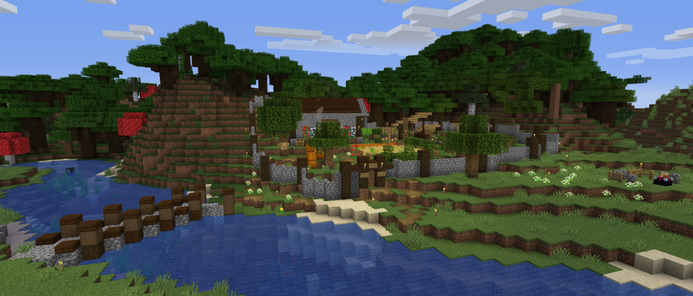

TUTORIALS
These tutorials are designed to help newcomers to Minecraft get a basic ground beneath their feet.
Newcomer survival
Shelters
| Column 1 | Column 2 | Column 3 |
|---|---|---|
| Building and construction | Shelters | Shelter types |
| Best biomes for homes | Best building materials | Desert shelter |
These tutorials are intended for right after you have a roof over your head and a renewable food source. These tutorials shed light on some of the core fixtures of Minecraft gameplay. As such, you should consider reading them all.